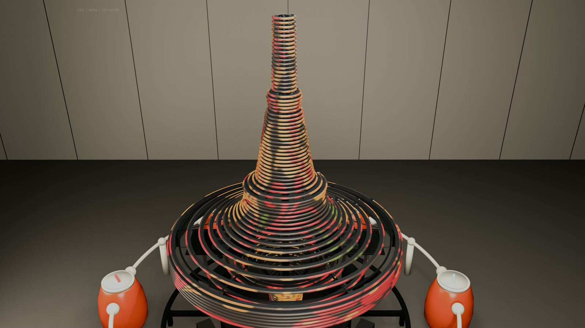

WEBGL / REAL-TIME / 90 ТРУБОК
Тот же волчок.
Тот же волчок.
Теперь им можно управлять.
Форма волчка и шесть оранжевых пультов перенесены из финальной сцены YouTube‑ролика. В браузере можно менять ход орнаментов и рассматривать конструкцию с любого ракурса.
- 90
- раздельных трубок D30
- 48
- LED‑позиций на метр
- 6
- пультов и секций

КАДР ИЗ 4K‑РОЛИКА 02 / 05ИНТЕРАКТИВНАЯ СЦЕНА
Проверьте движение света сами.
Поверните сцену мышью, приблизьте колесом или выберите готовый ракурс. Затем меняйте скорость шести секций.
АВТО
Потяните — поворотКолесо — масштаб1–6 — включить секцию
Автоматический цикл0,0 / 109 с
- Действие
- Ничего — сценарий идёт автоматически.
- На сцене
- Ожидание → включение шести зон → шесть народных орнаментов → снова ожидание.
- Длительность
- 109 секунд, затем повторяется.
01
Шесть пультов
Каждый пульт ведёт свою группу из 15 трубок. Минус — движение в обратную сторону.
02
Физика трубки
Настройки материала не закрывают реальные воздушные просветы между кольцами.
30 ммнаружный диаметр
20 ммвоздушный просвет
13 712адресных пикселей
КОНСТРУКЦИЯ / ФИНАЛ РОЛИКА
Не картинка на сплошной поверхности.
Орнамент существует только внутри 90 отдельных световых трубок. Чёрные несущие кольца, металлические рёбра, открытая силовая рама и трубка D30 показаны отдельными узлами — так же, как в финальном разборе мастер‑ролика.
Посмотреть разбор в 4K